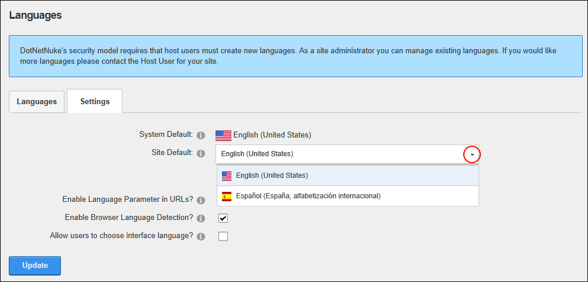
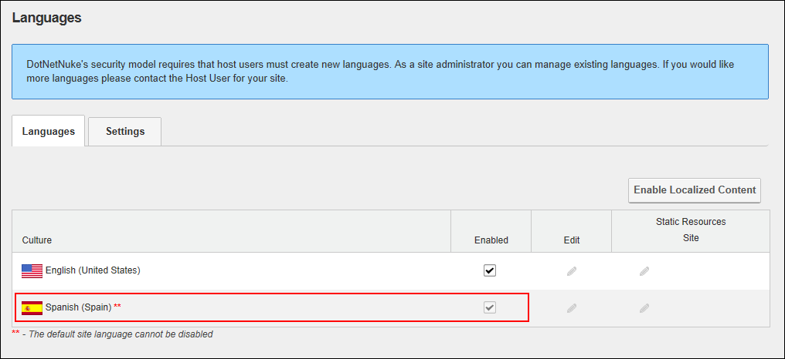

Any language that has been deployed/installed on the site can be set as the default language for this site. The default site language is allocated to site members upon registration, or when the regional language that they select is unavailable. SuperUsers can add additional languages that can then be enabled or disabled by Administrators. More language packs are freely available from the www.dnnsoftware.com website and the DotNetNuke Store (http://store.dnnsoftware.com/). DNN Platform users (including anonymous users) must be granted Edit Module permissions. Evoq Content users (including anonymous users) must be granted Edit Content permissions.
Note: Changing the default language doesn't update the language allocated to existing users. Only English (United States) is installed by default.

